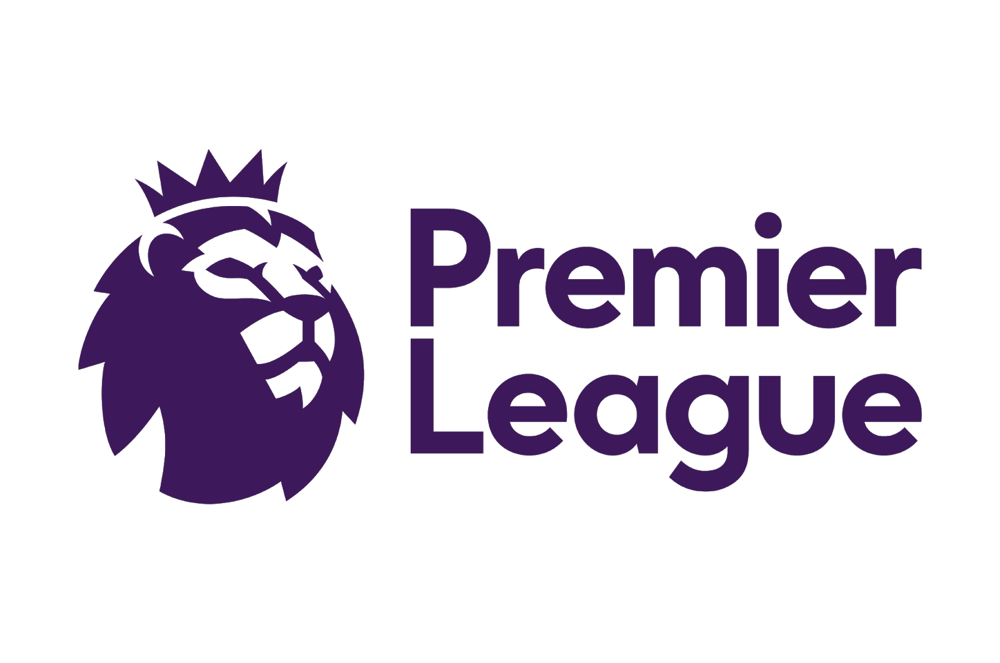

Data Story
Premier League 21-22
Research Question:
“How influential was the home advantage for the football clubs in the 21-22 premier league season?”
About the Premier League
The Premier League is the highest tier of football matches in the English football league. A total of 20 top football teams will compete in this league, which takes place between August and May annually, for a total of 380 matches.
Three points are awarded for a win, one point for a draw, and none are awarded for a loss. The champion emerges with the most points at the end of the season and wins the Premier League title.
Read more on the Premier League’s official website.
In the Premier League season of 2021-2022, Manchester City football club clinched the championship once again, after winning the 2020-2021 season as well, clocking their 6th Premier League title.
Data Analysis
Acquiring the relevant (cleaned) data-sets:
- Looking at structure of data-frame of relevant match details:
soccer <- read.csv("soccer21-22.csv")
weeklyrank <- read.csv("weeklyrank.csv")
str(soccer)'data.frame': 380 obs. of 22 variables:
$ Date : chr "13/08/2021" "14/08/2021" "14/08/2021" "14/08/2021" ...
$ HomeTeam: chr "Brentford" "Man United" "Burnley" "Chelsea" ...
$ AwayTeam: chr "Arsenal" "Leeds" "Brighton" "Crystal Palace" ...
$ FTHG : int 2 5 1 3 3 1 3 0 2 1 ...
$ FTAG : int 0 1 2 0 1 0 2 3 4 0 ...
$ FTR : chr "H" "H" "A" "H" ...
$ HTHG : int 1 1 1 2 0 1 2 0 2 0 ...
$ HTAG : int 0 0 0 0 1 0 0 1 1 0 ...
$ HTR : chr "H" "H" "H" "H" ...
$ Referee : chr "M Oliver" "P Tierney" "D Coote" "J Moss" ...
$ HS : int 8 16 14 13 14 9 13 14 17 13 ...
$ AS : int 22 10 14 4 6 17 11 19 8 18 ...
$ HST : int 3 8 3 6 6 5 7 3 3 3 ...
$ AST : int 4 3 8 1 3 3 2 8 9 4 ...
$ HF : int 12 11 10 15 13 6 18 4 4 11 ...
$ AF : int 8 9 7 11 15 10 13 14 3 8 ...
$ HC : int 2 5 7 5 6 5 2 3 7 3 ...
$ AC : int 5 4 6 2 8 4 4 11 6 11 ...
$ HY : int 0 1 2 0 2 1 3 1 1 2 ...
$ AY : int 0 2 1 0 0 2 1 1 0 1 ...
$ HR : int 0 0 0 0 0 0 0 0 0 0 ...
$ AR : int 0 0 0 0 0 0 0 0 0 0 ...- Looking at structure of data-frame of weekly rankings:
str(weeklyrank)'data.frame': 760 obs. of 5 variables:
$ Team : chr "Man United" "Chelsea" "Liverpool" "West Ham" ...
$ GD : int 4 3 3 2 2 2 1 1 1 1 ...
$ Points: int 3 3 3 3 3 3 3 3 3 3 ...
$ Rank : int 1 2 3 4 5 6 7 8 9 10 ...
$ Week : int 1 1 1 1 1 1 1 1 1 1 ...From the above we can identify a few important variables:
| Variable | Significance | Used For | Variable Type | From Data-Frame |
|---|---|---|---|---|
| $HTHG | Half Time Home Goals | Analysis of home advantage on half time result | INT | soccer |
| $HTAG | Half Time Away Goals | Analysis of home advantage on half time result | INT | soccer |
| $HTR | Half Time Result | Analysis of home advantage on half time result | CHR | soccer |
| $FTHG | Full Time Home Goals | Analysis of home advantage on full time result | INT | soccer |
| $FTAG | Full Time Away Goals | Analysis of home advantage on full time result | INT | soccer |
| $FTR | Full Time Result | Analysis of home advantage on full time result | CHR | soccer |
| $Team | Football Club Name | Analysis of effect of home advantage on weekly ranking of each FC | CHR | weeklyrank |
| $Rank | Ranking out of 20 | Analysis of effect of home advantage on weekly ranking of each FC | INT | weeklyrank |
| $Week | Week Number | Analysis of effect of home advantage on weekly ranking of each FC | INT | weeklyrank |
Discussion of Findings:
WIP…
References:
WIP…